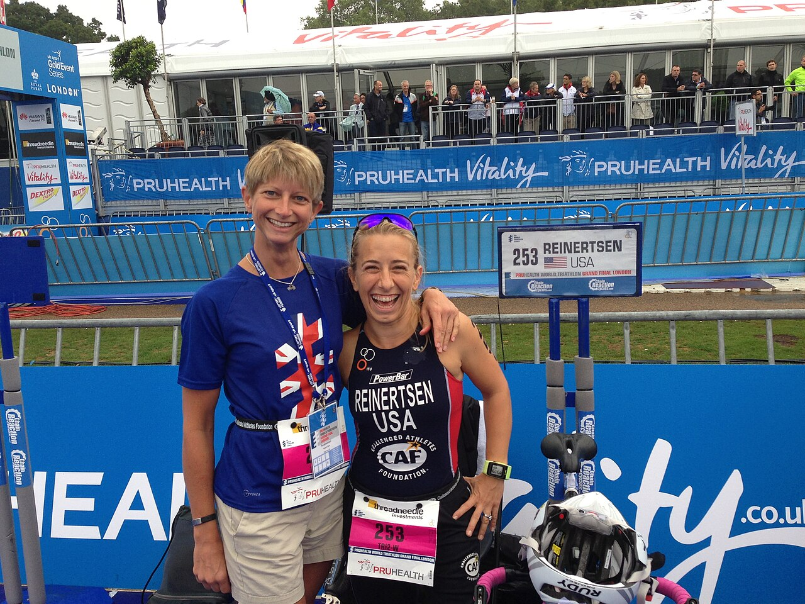

Lieu
Base de loisirs du Lac Bleu
Chemin du Lac
(adresse fictive pour le projet)
Tout ce qu'il faut savoir pour venir participer ou encourager les athlètes dans les meilleures conditions.
Base de loisirs du Lac Bleu
Chemin du Lac
(adresse fictive pour le projet)
Samedi 12 juin 2027
De 7 h 30 à 18 h 30
Entrée gratuite pour le public
Navette gratuite et accessible depuis la gare toutes les 20 minutes. Parking de 60 places réservées PMR à 50 m du village.

| Épreuve | Obligatoire | Conseillé |
|---|---|---|
| Natation | Bonnet de bain (fourni), maillot ou trifonction | Combinaison néoprène, lunettes |
| Vélo | Casque homologué, vélo / handbike / tandem en bon état | Gants, bidon d'eau |
| Course | Dossard visible | Fauteuil de course, prothèse de course, casquette |
Pas de matériel adapté ? Des handbikes et fauteuils de course peuvent être prêtés sur demande lors de l'inscription (nombre limité).
Pour toute question sur l'accessibilité ou un besoin particulier, écrivez-nous à contact@triathlon-tous-ensemble.example (adresse fictive).
.jpg){kind=link}